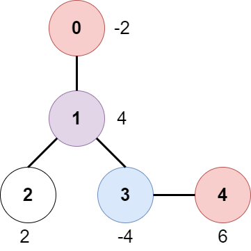
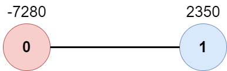

| Category | Difficulty | Likes | Dislikes |
|---|---|---|---|
| Algorithms | Medium | 1383 | 243 |
array | tree | depth-first-search | breadth-first-search | graph
amazon | uber | intuit
There is an undirected tree with n nodes labeled from 0 to n - 1, rooted at node 0. You are given a 2D integer array edges of length n - 1 where edges[i] = [ai, bi] indicates that there is an edge between nodes ai and bi in the tree.
At every node i, there is a gate. You are also given an array of even integers amount, where amount[i] represents:
i, if amount[i] is negative, or,i, otherwise.The game goes on as follows:
0 and Bob is at node bob.0.c, then both Alice and Bob pay c / 2 each. Similarly, if the reward at the gate is c, both of them receive c / 2 each.0, he stops moving. Note that these events are independent of each other.Return the maximum net income Alice can have if she travels towards the optimal leaf node.
Example 1:

Input: edges = [[0,1],[1,2],[1,3],[3,4]], bob = 3, amount = [-2,4,2,-4,6]
Output: 6
Explanation:
The above diagram represents the given tree. The game goes as follows:
- Alice is initially on node 0, Bob on node 3. They open the gates of their respective nodes.
Alice's net income is now -2.
- Both Alice and Bob move to node 1.
Since they reach here simultaneously, they open the gate together and share the reward.
Alice's net income becomes -2 + (4 / 2) = 0.
- Alice moves on to node 3. Since Bob already opened its gate, Alice's income remains unchanged.
Bob moves on to node 0, and stops moving.
- Alice moves on to node 4 and opens the gate there. Her net income becomes 0 + 6 = 6.
Now, neither Alice nor Bob can make any further moves, and the game ends.
It is not possible for Alice to get a higher net income.Example 2:

Input: edges = [[0,1]], bob = 1, amount = [-7280,2350]
Output: -7280
Explanation:
Alice follows the path 0->1 whereas Bob follows the path 1->0.
Thus, Alice opens the gate at node 0 only. Hence, her net income is -7280.
Constraints:
2 <= n <= 105edges.length == n - 1edges[i].length == 20 <= ai, bi < nai != biedges represents a valid tree.1 <= bob < namount.length == namount[i] is an even integer in the range [-104, 104].